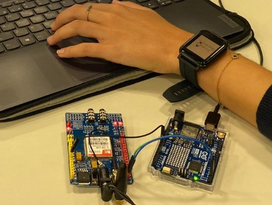
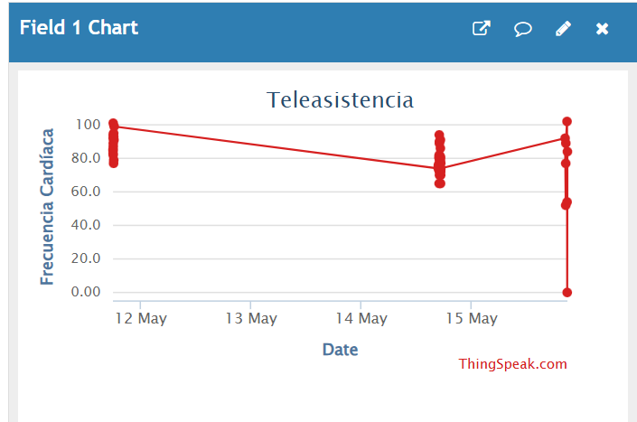

IoT Telecare System for
Real-Time Health Monitoring
A wearable-to-cloud academic prototype that acquires heart-rate and movement data, transfers it using Bluetooth Low Energy, visualizes it in ThingSpeak, and demonstrates automated GSM alerts.

Three communication layers. One monitoring pipeline.
Integrate wearable physiological sensing with a nearby Arduino gateway, a remote cloud dashboard and text-message alerting. The design was assessed as a communication-systems laboratory prototype, not as a clinical medical device.
From smartwatch to remote monitoring
Bangle.js
HR · Steps · GPS · Compass
Arduino UNO R4
BLE receiver and gateway
ThingSpeak / SIM900
Dashboard and SMS
Communication: BLE → Arduino → Wi-Fi/cloud or GSM/SMS.
ThingSpeak heart-rate data

Illustrative lab measurement series; not a clinical dataset.
GSM SMS demonstration
SMS alert documented in the original course report.
Successful tests included reception of BLE packets by Arduino, ThingSpeak field visualization and SMS delivery.
Source code & technical notes
The project comprises two programs: C++ firmware for the Arduino UNO R4 WiFi and Espruino JavaScript on the Bangle.js smartwatch. See the GitHub README for implementation details and limitations.
Proof of concept. The sanitised source has not been hardware-retested, and the warning thresholds are not clinically validated.